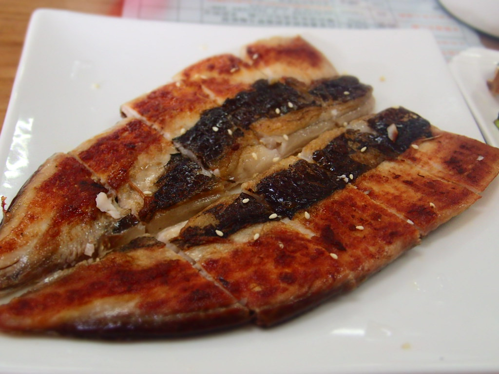

1 虱目魚肚輕刮去除多餘鱗片、沖水洗淨，並以紙巾吸乾水分。 魚鰭周邊的魚鱗容易被忽略，也可將魚鰭一同去除 3 接著在虱目魚肚兩面撒上鹽和胡椒粉，用手均勻抹開，靜置5分鐘。 1 取煎鍋，以大火先將鍋子乾燒至高溫再倒入適量油，輕輕搖晃鍋子讓熱油均勻分布於鍋面，並將剩餘熱油倒出。 4 轉小火，取虱目魚肚以魚皮面朝下先入鍋煎約3分鐘。 虱目魚肚遇熱油會釋出多餘水分而噴油，建議可蓋上鍋蓋燜煎。 5 觀察面朝上的側邊魚肉漸漸轉白，即可翻面續煎3～5分鐘，待魚肉全熟後即可起鍋。 過程會釋出魚油，可一邊煎一邊以夾子夾紙巾將多餘油份吸掉。 想要煎出特別「赤赤」口感，建議再翻回魚皮面熱煎1～2分鐘，也可視個人喜好口感掌控起鍋時間。 6 先置於紙巾（魚肚面朝上）吸掉多餘油脂，再盛盤擠上檸檬汁即完成。  鮮美海產粥 美味龍蝦 棒棒生蠔 心得
虱目魚肚輕刮去除多餘鱗片、沖水洗淨，並以紙巾吸乾水分。 魚鰭周邊的魚鱗容易被忽略，也可將魚鰭一同去除
3
接著在虱目魚肚兩面撒上鹽和胡椒粉，用手均勻抹開，靜置5分鐘。
1
取煎鍋，以大火先將鍋子乾燒至高溫再倒入適量油，輕輕搖晃鍋子讓熱油均勻分布於鍋面，並將剩餘熱油倒出。 4
轉小火，取虱目魚肚以魚皮面朝下先入鍋煎約3分鐘。 虱目魚肚遇熱油會釋出多餘水分而噴油，建議可蓋上鍋蓋燜煎。
5
觀察面朝上的側邊魚肉漸漸轉白，即可翻面續煎3～5分鐘，待魚肉全熟後即可起鍋。 過程會釋出魚油，可一邊煎一邊以夾子夾紙巾將多餘油份吸掉。 想要煎出特別「赤赤」口感，建議再翻回魚皮面熱煎1～2分鐘，也可視個人喜好口感掌控起鍋時間。
6
先置於紙巾（魚肚面朝上）吸掉多餘油脂，再盛盤擠上檸檬汁即完成。
鮮美海產粥 美味龍蝦 棒棒生蠔 心得